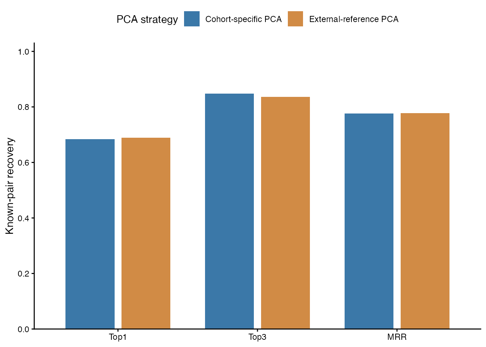

Tumor2Line: External Reference PCA versus Cohort-Specific PCA
Hua Zou
2026-11-17
Source:vignettes/Tumor2Line-reference-vs-cohort-pca.Rmd
Tumor2Line-reference-vs-cohort-pca.RmdIntroduction
Tumor2Line performs population-aware transcriptomic alignment between a query population and a candidate cancer cell-line population. This tutorial compares two ways to construct the molecular representation used for matching:
- Cohort-specific PCA: jointly construct the scaled-PCA representation from the query tumors and candidate cell lines in the current dataset.
- External-reference PCA: project the same query tumors and candidate cell lines into a frozen PCA space constructed from a larger Celligner reference compendium.
The purpose is to assess whether a larger, externally defined reference population changes the matching results when the query and candidate cohorts are relatively small. Both strategies use the same PDMR query samples, the same candidate cell lines, and the same lineage-aware unbalanced optimal transport (uOT) settings. Only the source of the PCA representation differs.
The tutorial uses four PDMR lineages as an example. Known PDMR tumor-cell-line pairs are retained for evaluation only; pair information is not used to construct the molecular representation or perform uOT matching.
Load Tumor2Line and required packages
library(Tumor2Line)
library(data.table)
library(dplyr)
#>
#> Attaching package: 'dplyr'
#> The following objects are masked from 'package:data.table':
#>
#> between, first, last
#> The following objects are masked from 'package:stats':
#>
#> filter, lag
#> The following objects are masked from 'package:base':
#>
#> intersect, setdiff, setequal, union
library(ggplot2)Obtain and read the input datasets
Data availability and directory structure
The full PDMR and Celligner expression matrices, together with the prebuilt reference PCA object, are large and are therefore distributed separately from the lightweight R package.
Download the data files from the Google Drive:Tumor2Line RefData.
After downloading, place all files in one local directory:
Tumor2Line RefData/
├── Celligner_tumor_gene_expression.tsv
├── Celligner_cellline_gene_expression.tsv
├── Celligner_phenotype.tsv
├── Celligner_reference_pca.rds
├── PDMR_tumor_gene_expression.tsv
├── PDMR_cellline_gene_expression.tsv
└── PDMR_phenotype.tsvThe PDMR expression and phenotype files are required for the cohort-specific versus external-reference PCA comparison.
The prebuilt Celligner_reference_pca.rds can be loaded
directly. The original Celligner expression and phenotype files are only
required when rebuilding the external reference PCA space.
If the required files are unavailable, data-dependent computational chunks are automatically skipped, allowing the vignette to be built without downloading the external datasets.
DATA_DIR <- "your/path/to/Tumor2Line_RefData"
required_files <- c(
"Celligner_tumor_gene_expression.tsv",
"Celligner_cellline_gene_expression.tsv",
"Celligner_phenotype.tsv",
"PDMR_tumor_gene_expression.tsv",
"PDMR_cellline_gene_expression.tsv",
"PDMR_phenotype.tsv"
)
missing_files <- required_files[
!file.exists(file.path(DATA_DIR, required_files))
]
if (length(missing_files) > 0) {
stop(
"The following files are missing from DATA_DIR: ",
paste(missing_files, collapse = ", "),
"\nPlease download the expression and phenotype files from the ",
"Tumor2Line data bundle and set DATA_DIR.",
call. = FALSE
)
}
reference_file <- file.path(
DATA_DIR,
"Celligner_reference_pca.rds"
)Celligner external reference dataset
The external reference compendium contains tumor expression profiles represented by the Celligner tumor dataset and cancer cell-line expression profiles represented by the Celligner cell-line dataset. In the Tumor2Line reference resource used here, the tumor component comprises samples assembled from TCGA, TARGET and Treehouse, while the cell-line component comprises CCLE cancer cell lines.
The phenotype table records the sample annotations used to identify the biological sample type and cancer lineage. The actual number of samples and their lineage composition should be read from the supplied phenotype file, because these values depend on the exact data release and any preprocessing performed when the files were assembled.
The Celligner expression matrices are already processed as
log2(TPM + 1). They must therefore be supplied with
input_scale = "processed" when constructing the reference
PCA; they must not be log-transformed a second time.
celligner_tumor <- data.table::fread(
file.path(DATA_DIR, "Celligner_tumor_gene_expression.tsv"),
data.table = FALSE,
check.names = FALSE,
colClasses = list(character = "sampleID")
)
celligner_cellline <- data.table::fread(
file.path(DATA_DIR, "Celligner_cellline_gene_expression.tsv"),
data.table = FALSE,
check.names = FALSE,
colClasses = list(character = "sampleID")
)
celligner_phenotype <- data.table::fread(
file.path(DATA_DIR, "Celligner_phenotype.tsv"),
data.table = FALSE,
check.names = FALSE,
colClasses = list(character = "sampleID")
)Inspect the sample-type and lineage composition of the external reference:
table(celligner_phenotype$type, useNA = "ifany")
#>
#> CL tumor
#> 1249 12236
celligner_reference_composition <- celligner_phenotype |>
dplyr::count(.data$type, .data$lineage, name = "n_samples") |>
dplyr::arrange(.data$type, dplyr::desc(.data$n_samples))
celligner_reference_composition
#> type lineage n_samples
#> 1 CL lung 206
#> 2 CL blood 93
#> 3 CL central_nervous_system 75
#> 4 CL lymphocyte 74
#> 5 CL skin 68
#> 6 CL colorectal 65
#> 7 CL soft_tissue 62
#> 8 CL breast 56
#> 9 CL ovary 56
#> 10 CL pancreas 49
#> 11 CL gastric 41
#> 12 CL upper_aerodigestive 40
#> 13 CL fibroblast 39
#> 14 CL bone 36
#> 15 CL urinary_tract 36
#> 16 CL kidney 35
#> 17 CL esophagus 32
#> 18 CL bile_duct 31
#> 19 CL uterus 31
#> 20 CL plasma_cell 30
#> 21 CL peripheral_nervous_system 26
#> 22 CL liver 24
#> 23 CL thyroid 12
#> 24 CL cervix 10
#> 25 CL prostate 7
#> 26 CL eye 6
#> 27 CL engineered_kidney 2
#> 28 CL adrenal_cortex 1
#> 29 CL embryo 1
#> 30 CL engineered_breast 1
#> 31 CL engineered_central_nervous_system 1
#> 32 CL engineered_lung 1
#> 33 CL engineered_ovary 1
#> 34 CL engineered_prostate 1
#> 35 tumor central_nervous_system 1223
#> 36 tumor blood 1121
#> 37 tumor lung 1102
#> 38 tumor breast 1099
#> 39 tumor kidney 1019
#> 40 tumor upper_aerodigestive 521
#> 41 tumor thyroid 515
#> 42 tumor prostate 496
#> 43 tumor soft_tissue 491
#> 44 tumor skin 476
#> 45 tumor ovary 427
#> 46 tumor gastric 420
#> 47 tumor urinary_tract 407
#> 48 tumor liver 398
#> 49 tumor colorectal 384
#> 50 tumor cervix 307
#> 51 tumor adrenal 279
#> 52 tumor bone 263
#> 53 tumor uterus 238
#> 54 tumor esophagus 182
#> 55 tumor pancreas 180
#> 56 tumor peripheral_nervous_system 180
#> 57 tumor germ_cell 156
#> 58 tumor thymus 121
#> 59 tumor lymphocyte 97
#> 60 tumor eye 81
#> 61 tumor bile_duct 37
#> 62 tumor nerve 9
#> 63 tumor nasopharynx 3
#> 64 tumor endocrine 1
#> 65 tumor pineal 1
#> 66 tumor teratoma 1
#> 67 tumor unknown 1The expression matrices and phenotype table should refer to the same samples. The following checks summarize their dimensions and sample-ID coverage:
c(
Celligner_tumors = nrow(celligner_tumor),
Celligner_cell_lines = nrow(celligner_cellline),
Celligner_phenotype = nrow(celligner_phenotype)
)
#> Celligner_tumors Celligner_cell_lines Celligner_phenotype
#> 12236 1249 13485
c(
tumor_expression_IDs_in_phenotype = sum(
celligner_tumor$sampleID %in% celligner_phenotype$sampleID
),
cellline_expression_IDs_in_phenotype = sum(
celligner_cellline$sampleID %in% celligner_phenotype$sampleID
)
)
#> tumor_expression_IDs_in_phenotype cellline_expression_IDs_in_phenotype
#> 12236 1249PDMR query and candidate cell-line dataset
The PDMR example contains paired tumor and cell-line expression
profiles. The expression matrices supplied here are in TPM units, so
they are passed to Tumor2Line with
query_input_scale = "raw" and
cellline_input_scale = "raw". In this function,
raw refers to untransformed TPM rather than raw RNA-seq
read counts.
The PDMR phenotype provides the sample identifier, known-pair
identifier, sample class and cancer-lineage annotation.
PairID is used only for the downstream known-pair
evaluation.
pdmr_tumor <- data.table::fread(
file.path(DATA_DIR, "PDMR_tumor_gene_expression.tsv"),
data.table = FALSE,
check.names = FALSE,
colClasses = list(character = "SampleID")
)
pdmr_cellline <- data.table::fread(
file.path(DATA_DIR, "PDMR_cellline_gene_expression.tsv"),
data.table = FALSE,
check.names = FALSE,
colClasses = list(character = "SampleID")
)
pdmr_phenotype <- data.table::fread(
file.path(DATA_DIR, "PDMR_phenotype.tsv"),
data.table = FALSE,
check.names = FALSE,
colClasses = list(character = "SampleID")
)Check the PDMR sample composition:
table(pdmr_phenotype$model_lineage, pdmr_phenotype$SampleClass)
#>
#> cellline tumor
#> BRCA 8 8
#> CESC 6 6
#> CHOL 4 4
#> COAD 25 25
#> COADREAD 3 3
#> HNSC 14 14
#> KIRC 6 6
#> LUAD 3 3
#> LUSC 7 7
#> OTHER 8 8
#> OV 13 13
#> PAAD 23 23
#> READ 5 5
#> SARC_MFH_MFS_FIBS 13 13
#> SARC_RARE 4 4
#> SKCM 14 14
#> UCEC 14 14
#> UCS 7 7Build or load the external reference PCA
The external reference PCA is constructed once from the full Celligner tumor and cell-line populations. The reference transformation stores the selected genes, gene-wise scaling parameters, PCA loadings and PC-scaling parameters. Future query and candidate samples can then be projected into this same molecular space without refitting the PCA on the new cohort.
The Celligner reference is constructed as follows:
- combine the Celligner tumor and cell-line expression profiles;
- use the shared genes and rank genes by expression variability;
- select the top 10,000 variable genes;
- apply joint gene-wise scaling;
- fit PCA and retain the smallest number of PCs reaching 90% cumulative explained variance;
- scale the retained PC scores using the reference population.
No fixed maximum PC count is imposed; the retained number of PCs is determined by the 90% cumulative variance threshold.
Construct the reference PCA from Celligner data
The following code documents how to generate the reference PCA object. It is shown for reproducibility and is not run automatically when rendering this tutorial, because the full Celligner matrices are large and the reference object is intended to be generated once and reused.
celligner_reference <- build_reference_pca(
tumor_expr = celligner_tumor,
cellline_expr = celligner_cellline,
phenotype = celligner_phenotype,
sample_id_col = "sampleID",
type_col = "type",
lineage_col = "lineage",
tumor_label = "tumor",
cellline_label = "CL",
input_scale = "processed",
n_variable_genes = 10000,
pca_variance_threshold = 0.90,
scale_genes = TRUE
)
saveRDS(
celligner_reference,
"Celligner_reference_pca.rds",
compress = "xz"
)Once generated, Celligner_reference_pca.rds should be
stored with the other large project data files in the shared Google
Drive folder. Users do not need to rebuild it for every analysis.
Load the prebuilt reference PCA
To generate the reference during this tutorial, change the
construction chunk’s eval = FALSE setting to
eval = TRUE and run it once. If the prebuilt RDS has
already been downloaded or generated, leave that chunk unevaluated and
load the saved object below.
if (!file.exists(reference_file)) {
stop(
"Celligner_reference_pca.rds was not found. ",
"Download it from the project Google Drive folder or run the ",
"reference-construction chunk first.",
call. = FALSE
)
}
celligner_reference <- readRDS(reference_file)
names(celligner_reference)
#> [1] "representation" "metadata" "cellline_scores"
#> [4] "cellline_metadata" "tumor_scores" "tumor_metadata"
#> [7] "parameters"
celligner_reference$parameters
#> $sample_id_col
#> [1] "sampleID"
#>
#> $type_col
#> [1] "type"
#>
#> $lineage_col
#> [1] "lineage"
#>
#> $tumor_label
#> [1] "tumor"
#>
#> $cellline_label
#> [1] "CL"
#>
#> $input_scale
#> [1] "processed"
#>
#> $n_variable_genes
#> [1] 10000
#>
#> $pca_variance_threshold
#> [1] 0.9
#>
#> $selected_pcs
#> [1] 826
#>
#> $common_gene_count
#> [1] 19188
#>
#> $n_reference_samples
#> [1] 13485
#>
#> $n_reference_tumors
#> [1] 12236
#>
#> $n_reference_celllines
#> [1] 1249The loaded object is used unchanged by Strategy B.
Compare the two PCA construction strategies
The same PDMR query tumors and candidate cell lines are used in both strategies.
available_lineages <- unique(as.character(pdmr_phenotype$model_lineage))
selected_lineages <- available_lineages
missing_lineages <- setdiff(selected_lineages, available_lineages)
if (length(missing_lineages) > 0) {
stop(
"The following requested PDMR lineages are unavailable: ",
paste(missing_lineages, collapse = ", "),
call. = FALSE
)
}
phenotype_small <- pdmr_phenotype[
pdmr_phenotype$model_lineage %in% selected_lineages,
, drop = FALSE]
selected_ids <- phenotype_small$SampleID
query_expr_small <- pdmr_tumor[
pdmr_tumor$SampleID %in% selected_ids,
, drop = FALSE]
cellline_expr_small <- pdmr_cellline[
pdmr_cellline$SampleID %in% selected_ids,
, drop = FALSE]
retained_ids <- c(
query_expr_small$SampleID,
cellline_expr_small$SampleID
)
phenotype_small <- phenotype_small[
phenotype_small$SampleID %in% retained_ids,
, drop = FALSE]
table(phenotype_small$model_lineage, phenotype_small$SampleClass)
#>
#> cellline tumor
#> BRCA 8 8
#> CESC 6 6
#> CHOL 4 4
#> COAD 25 25
#> COADREAD 3 3
#> HNSC 14 14
#> KIRC 6 6
#> LUAD 3 3
#> LUSC 7 7
#> OTHER 8 8
#> OV 13 13
#> PAAD 23 23
#> READ 5 5
#> SARC_MFH_MFS_FIBS 13 13
#> SARC_RARE 4 4
#> SKCM 14 14
#> UCEC 14 14
#> UCS 7 7
dim(query_expr_small)
#> [1] 177 17939
dim(cellline_expr_small)
#> [1] 177 17939Both strategies use the same matching settings:
- candidate cell lines are restricted to the query tumor’s lineage;
- Euclidean distance is used to construct the cost matrix;
- entropic regularization is set to
epsilon = 0.1; - query and cell-line marginal relaxation parameters are both set to
rho = 1.
Strategy A: cohort-specific PDMR PCA
In Strategy A, the selected PDMR tumors and cell lines jointly define
the molecular representation. The data are transformed from TPM to
log2(TPM + 1), the top 10,000 variable genes are selected
across the combined cohort, genes are centered and scaled, and PCA is
fitted to this cohort. Retained PC scores are then scaled before uOT
matching.
pdmr_cohort_result <- run_tumor2line(
query_expr = query_expr_small,
cellline_expr = cellline_expr_small,
phenotype = phenotype_small,
sample_id_col = "SampleID",
pair_col = "PairID",
lineage_col = "model_lineage",
sample_type_col = "SampleClass",
query_type = "tumor",
cellline_type = "cellline",
query_input_scale = "raw",
cellline_input_scale = "raw",
n_variable_genes = 10000,
pca_variance_threshold = 0.90,
candidate_scope = "within_lineage",
distance = "euclidean",
epsilon = 0.1,
rho_query = 1,
rho_cellline = 1
)
pdmr_cohort_result
#> Tumor2Line result
#> Queries: 177
#> Cell lines: 177
#> Lineages: 18
#> Selected genes: 10000
#> Selected PCs: 163
#> PCA threshold: 0.9
#> Candidate scope: within_lineage
#> Ranking rows: 2453
#>
#> Known-pair evaluation:
#> # A tibble: 1 × 6
#> n_query Top1_accuracy Top3_accuracy MRR median_true_rank mean_true_rank
#> <int> <dbl> <dbl> <dbl> <int> <dbl>
#> 1 177 0.684 0.847 0.776 1 2.38Strategy B: external-reference PCA
In Strategy B, the selected PDMR tumors and cell lines are projected into the frozen Celligner reference PCA space. The reference gene set, gene-wise centering and scaling parameters, PCA loadings and PC-wise scaling parameters are reused. The PDMR cohort does not refit any part of the reference transformation.
pdmr_reference_result <- run_tumor2line_with_reference(
query_expr = query_expr_small,
cellline_expr = cellline_expr_small,
query_phenotype = phenotype_small,
cellline_phenotype = phenotype_small,
reference = celligner_reference,
query_sample_id_col = "SampleID",
cellline_sample_id_col = "SampleID",
query_lineage_col = "model_lineage",
cellline_lineage_col = "model_lineage",
pair_col = "PairID",
query_input_scale = "raw",
cellline_input_scale = "raw",
candidate_scope = "within_lineage",
distance = "euclidean",
epsilon = 0.1,
rho_query = 1,
rho_cellline = 1
)
pdmr_reference_result
#> Tumor2Line result
#> Queries: 177
#> Cell lines: 177
#> Lineages: 18
#> Selected genes: 9562
#> Selected PCs: 826
#> PCA threshold: 0.9
#> Candidate scope: within_lineage
#> Ranking rows: 2453
#>
#> Known-pair evaluation:
#> # A tibble: 1 × 6
#> n_query Top1_accuracy Top3_accuracy MRR median_true_rank mean_true_rank
#> <int> <dbl> <dbl> <dbl> <int> <dbl>
#> 1 177 0.689 0.836 0.778 1 2.41Evaluate and compare the matching results
Compare candidate rankings
Retrieve the top five candidate cell lines for each query tumor under both strategies:
cohort_top5 <- get_top_matches(pdmr_cohort_result, n = 5)
reference_top5 <- get_top_matches(pdmr_reference_result, n = 5)
head(cohort_top5, 10)
#> # A tibble: 10 × 15
#> Method lineage Query_ID CellLine_ID transport_mass matching_probability
#> <chr> <chr> <chr> <chr> <dbl> <dbl>
#> 1 Tumor2Line SARC_RARE 114434_… 114434__19… 0.0950 0.618
#> 2 Tumor2Line SARC_RARE 114434_… 325954__24… 0.0292 0.189
#> 3 Tumor2Line SARC_RARE 114434_… 571681__07… 0.0203 0.132
#> 4 Tumor2Line SARC_RARE 114434_… 635999__06… 0.00936 0.0608
#> 5 Tumor2Line OTHER 116655_… 116655__07… 0.0842 0.793
#> 6 Tumor2Line OTHER 116655_… 428986__08… 0.00753 0.0709
#> 7 Tumor2Line OTHER 116655_… 947725__31… 0.00665 0.0626
#> 8 Tumor2Line OTHER 116655_… 466732__25… 0.00338 0.0318
#> 9 Tumor2Line OTHER 116655_… 987419__14… 0.00270 0.0254
#> 10 Tumor2Line SARC_MFH… 126254_… 126254__01… 0.0617 0.865
#> # ℹ 9 more variables: query_total_mass <dbl>, cellline_total_mass <dbl>,
#> # cost <dbl>, rank <int>, n_candidates <int>, candidate_scope <chr>,
#> # OT_converged <lgl>, OT_iterations <int>, OT_final_delta <dbl>
head(reference_top5, 10)
#> # A tibble: 10 × 15
#> Method lineage Query_ID CellLine_ID transport_mass matching_probability
#> <chr> <chr> <chr> <chr> <dbl> <dbl>
#> 1 Tumor2Line SARC_RARE 114434_… 114434__19… 0.138 0.824
#> 2 Tumor2Line SARC_RARE 114434_… 635999__06… 0.0129 0.0769
#> 3 Tumor2Line SARC_RARE 114434_… 571681__07… 0.0125 0.0745
#> 4 Tumor2Line SARC_RARE 114434_… 325954__24… 0.00412 0.0246
#> 5 Tumor2Line OTHER 116655_… 116655__07… 0.0661 0.638
#> 6 Tumor2Line OTHER 116655_… 947725__31… 0.0115 0.111
#> 7 Tumor2Line OTHER 116655_… 428986__08… 0.0102 0.0980
#> 8 Tumor2Line OTHER 116655_… 987419__14… 0.00439 0.0423
#> 9 Tumor2Line OTHER 116655_… 466732__25… 0.00412 0.0397
#> 10 Tumor2Line SARC_MFH… 126254_… 126254__01… 0.0345 0.521
#> # ℹ 9 more variables: query_total_mass <dbl>, cellline_total_mass <dbl>,
#> # cost <dbl>, rank <int>, n_candidates <int>, candidate_scope <chr>,
#> # OT_converged <lgl>, OT_iterations <int>, OT_final_delta <dbl>Compare the rank-1 cell-line assignments:
cohort_top1 <- pdmr_cohort_result$top_matches |>
dplyr::select(
.data$Query_ID,
CellLine_ID_cohort = .data$CellLine_ID
)
reference_top1 <- pdmr_reference_result$top_matches |>
dplyr::select(
.data$Query_ID,
CellLine_ID_reference = .data$CellLine_ID
)
top1_comparison <- dplyr::inner_join(
cohort_top1,
reference_top1,
by = "Query_ID"
)
top1_agreement <- top1_comparison |>
dplyr::summarise(
n_queries = dplyr::n(),
top1_agreement = mean(
.data$CellLine_ID_cohort == .data$CellLine_ID_reference
)
)
top1_agreement
#> # A tibble: 1 × 2
#> n_queries top1_agreement
#> <int> <dbl>
#> 1 177 0.774Compare Top1, Top3 and MRR
Known-pair evaluation is available because the selected PDMR cohort
contains PairID annotations. For each strategy, the true
rank of the known paired cell line is used to calculate:
- Top1: proportion of query tumors whose known paired cell line ranks first;
- Top3: proportion whose known paired cell line is among the top three;
- MRR: mean reciprocal rank of the known paired cell line.
summarise_matching_metrics <- function(result, strategy_name) {
if (is.null(result$evaluation) ||
is.null(result$evaluation$pair_ranks)) {
stop(
"Known-pair evaluation is unavailable for: ",
strategy_name,
call. = FALSE
)
}
pair_ranks <- result$evaluation$pair_ranks
if (!"true_rank" %in% names(pair_ranks)) {
stop(
"The evaluation pair_ranks table does not contain true_rank.",
call. = FALSE
)
}
true_rank <- pair_ranks$true_rank
true_rank <- true_rank[
!is.na(true_rank) &
is.finite(true_rank) &
true_rank > 0
]
if (length(true_rank) == 0) {
stop(
"No evaluable known-pair ranks were found for: ",
strategy_name,
call. = FALSE
)
}
tibble::tibble(
Strategy = strategy_name,
n_evaluated = length(true_rank),
Top1 = mean(true_rank == 1),
Top3 = mean(true_rank <= 3),
MRR = mean(1 / true_rank)
)
}
metric_summary <- dplyr::bind_rows(
summarise_matching_metrics(
pdmr_cohort_result,
"Cohort-specific PCA"
),
summarise_matching_metrics(
pdmr_reference_result,
"External-reference PCA"
)
)
metric_summary
#> # A tibble: 2 × 5
#> Strategy n_evaluated Top1 Top3 MRR
#> <chr> <int> <dbl> <dbl> <dbl>
#> 1 Cohort-specific PCA 177 0.684 0.847 0.776
#> 2 External-reference PCA 177 0.689 0.836 0.778Visualize the metrics with a distinct color for each PCA strategy:
metric_long <- metric_summary |>
tidyr::pivot_longer(
cols = c("Top1", "Top3", "MRR"),
names_to = "Metric",
values_to = "Value"
) |>
dplyr::mutate(
Metric = factor(
.data$Metric,
levels = c("Top1", "Top3", "MRR")
),
Strategy = factor(
.data$Strategy,
levels = c(
"Cohort-specific PCA",
"External-reference PCA"
)
)
)
ggplot2::ggplot(
metric_long,
ggplot2::aes(
x = .data$Metric,
y = .data$Value,
fill = .data$Strategy
)
) +
ggplot2::geom_col(
position = ggplot2::position_dodge(width = 0.8),
width = 0.7
) +
ggplot2::scale_fill_manual(
values = c(
"Cohort-specific PCA" = "#3B78A8",
"External-reference PCA" = "#D18B45"
)
) +
ggplot2::scale_y_continuous(
limits = c(0, 1),
breaks = seq(0, 1, by = 0.2),
expand = ggplot2::expansion(mult = c(0, 0.03))
) +
ggplot2::labs(
x = NULL,
y = "Known-pair recovery",
fill = "PCA strategy"
) +
ggplot2::theme_classic() +
ggplot2::theme(
legend.position = "top",
axis.text = ggplot2::element_text(color = "black"),
axis.title = ggplot2::element_text(color = "black")
)
The number of evaluable query tumors is reported in
n_evaluated. Top1, Top3 and MRR are calculated from the
same set of query tumors with an evaluable known-pair rank.
Summary and interpretation
This comparison isolates the effect of the PCA reference population while keeping the query samples, candidate cell lines and uOT parameters unchanged.
Cohort-specific PCA is a reasonable choice when the current query and candidate populations are sufficiently large to estimate a stable transcriptomic representation. In that setting, its Top1, Top3 and MRR performance may be similar to that obtained with the external-reference PCA.
When the available query or candidate cohort is small, the external Celligner reference provides a larger and fixed background for gene selection, scaling and PCA. This can reduce dependence of the molecular representation on the composition and size of an individual user’s dataset. The external-reference strategy does not replace population-aware matching: uOT is still performed on the user’s query and candidate populations after they have been projected into the reference space.
The relative performance should be judged from the results for the dataset being analyzed; similarity between the two strategies is not guaranteed for every lineage or cohort.
Session information
sessionInfo()
#> R version 4.4.3 (2025-02-28)
#> Platform: aarch64-apple-darwin20
#> Running under: macOS Sequoia 15.6.1
#>
#> Matrix products: default
#> BLAS: /Library/Frameworks/R.framework/Versions/4.4-arm64/Resources/lib/libRblas.0.dylib
#> LAPACK: /Library/Frameworks/R.framework/Versions/4.4-arm64/Resources/lib/libRlapack.dylib; LAPACK version 3.12.0
#>
#> locale:
#> [1] en_US.UTF-8/en_US.UTF-8/en_US.UTF-8/C/en_US.UTF-8/en_US.UTF-8
#>
#> time zone: Asia/Shanghai
#> tzcode source: internal
#>
#> attached base packages:
#> [1] stats graphics grDevices utils datasets methods base
#>
#> other attached packages:
#> [1] ggplot2_4.0.0 dplyr_1.1.4 data.table_1.17.8 Tumor2Line_0.1.3
#>
#> loaded via a namespace (and not attached):
#> [1] gtable_0.3.6 jsonlite_2.0.0 compiler_4.4.3 tidyselect_1.2.1
#> [5] dichromat_2.0-0.1 tidyr_1.3.1 jquerylib_0.1.4 systemfonts_1.3.1
#> [9] scales_1.4.0 textshaping_1.0.4 yaml_2.3.10 fastmap_1.2.0
#> [13] R6_2.6.1 generics_0.1.4 knitr_1.50 htmlwidgets_1.6.4
#> [17] tibble_3.3.0 desc_1.4.3 bslib_0.9.0 pillar_1.11.1
#> [21] RColorBrewer_1.1-3 rlang_1.1.6 utf8_1.2.6 cachem_1.1.0
#> [25] xfun_0.54 S7_0.2.0 fs_1.6.6 sass_0.4.10
#> [29] cli_3.6.5 withr_3.0.2 pkgdown_2.1.3 magrittr_2.0.4
#> [33] digest_0.6.37 grid_4.4.3 rstudioapi_0.17.1 lifecycle_1.0.4
#> [37] vctrs_0.6.5 evaluate_1.0.5 glue_1.8.0 farver_2.1.2
#> [41] ragg_1.5.0 purrr_1.2.0 rmarkdown_2.30 tools_4.4.3
#> [45] pkgconfig_2.0.3 htmltools_0.5.8.1